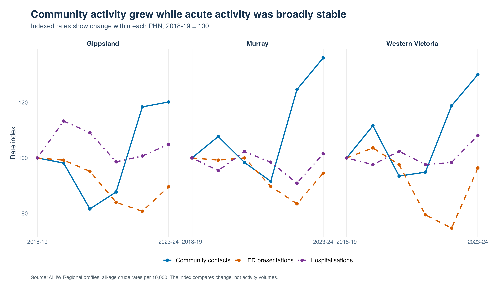
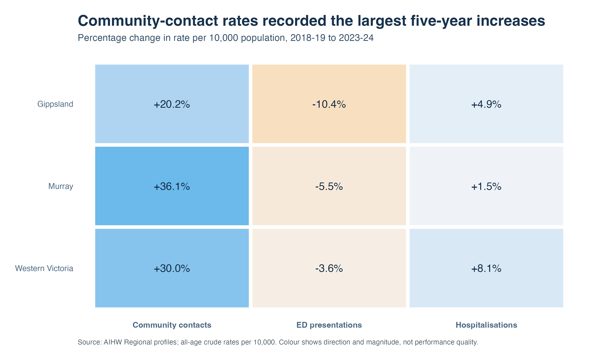
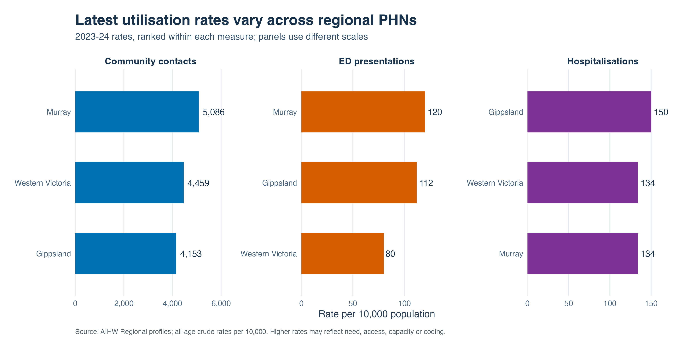
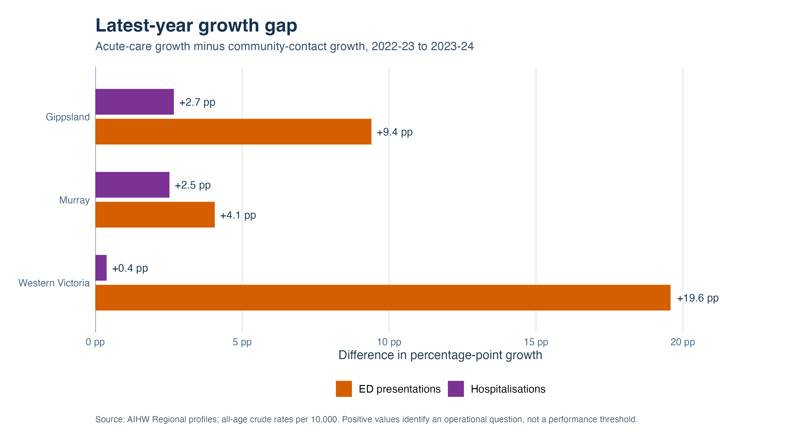

| PHN | Indicator | Rate per 10,000 |
|---|---|---|
| Gippsland | Community contacts | 4,153 |
| Gippsland | ED presentations | 112 |
| Gippsland | Hospitalisations | 150 |
| Murray | Community contacts | 5,086 |
| Murray | ED presentations | 120 |
| Murray | Hospitalisations | 134 |
| Western Victoria | Community contacts | 4,459 |
| Western Victoria | ED presentations | 80 |
| Western Victoria | Hospitalisations | 134 |
Independent analytical briefing
Victorian regional mental-health service utilisation
A descriptive assessment of community and acute mental-health service activity across Gippsland, Murray and Western Victoria.
Business question
How has mental-health service utilisation changed across regional Victorian PHNs, and which patterns warrant further operational review?
How has mental-health service utilisation changed across regional Victorian PHNs, and which patterns warrant further operational review?
+36.1% Largest five-year community growth Murray, 2018–19 to 2023–24
5,086 Community contacts per 10,000 Murray, 2023–24
29.0% Largest latest-year ED increase Western Victoria, 2022–23 to 2023–24
933 Community-contact regional range Rate difference, 2023–24
Executive brief
- Community-contact rates increased across all three PHNs. Five-year growth ranged from 20.2% in Gippsland to 36.1% in Murray.
- Acute-care rates were comparatively stable over five years. ED presentation rates were lower in 2023–24 than in 2018–19 in every PHN; hospitalisation rates increased by between 1.5% and 8.1%.
- The latest year differed from the longer pattern. ED and hospitalisation rates grew faster than community contacts in every PHN between 2022–23 and 2023–24.
- Regional profiles differ. Murray recorded the highest latest community-contact and ED rates; Gippsland recorded the highest hospitalisation rate.
Management reading
The latest increase in acute activity warrants monitoring because it differs from the five-year pattern. The evidence does not establish why the change occurred.
Immediate review priorities
- confirm whether the increase continues in newer data;
- review Western Victoria’s ED change;
- review Gippsland’s hospitalisation profile; and
- check for changes in coding, coverage or service configuration.
Long-term trend
Management question 1
How has the service mix changed?

Reading the chart
Community-contact rates increased more than ED presentations or hospitalisations over the full period in every PHN.
Indexing allows the direction and scale of change to be compared across indicators. It does not compare activity volumes.
Operational use: Track whether growth in community activity is sustained and whether acute-care trends remain stable in newer reporting periods.
Management question 2
Which indicators changed most over five years?

Reading the chart
- Murray recorded the largest community-contact increase: 36.1%.
- Gippsland recorded the largest ED change: a 10.4% decrease.
- Western Victoria recorded the largest hospitalisation increase: 8.1%.
Interpretation: Percentage change should be read alongside the underlying rate, particularly for the smaller acute-care indicators.
Latest regional profile
Management question 3
Which PHNs recorded the highest latest rates?

Reading the chart
Murray recorded the highest community-contact rate (5,086) and ED presentation rate (120) per 10,000. Gippsland recorded the highest hospitalisation rate (150).
Interpretation: A higher rate does not by itself indicate better or poorer performance. Consider population need, access, capacity, service models and data coverage.
Published 2023–24 rates
Operational review
Management question 4
Where did acute activity grow faster than community contacts?

Reading the chart
Both acute indicators grew faster than community contacts in every PHN in the latest year.
Western Victoria recorded the largest ED growth gap: 29.0% ED growth compared with 9.5% community-contact growth.
Interpretation: These differences identify questions for review. They are not performance thresholds and do not show that changes in community care caused acute activity.
Latest-year change
| PHN | Community | ED | Hospital | ED minus community |
|---|---|---|---|---|
| Gippsland | 1.5% | 10.9% | 4.2% | +9.4 pp |
| Murray | 9.1% | 13.2% | 11.7% | +4.1 pp |
| Western Victoria | 9.5% | 29.0% | 9.8% | +19.6 pp |
Priority observation: Western Victoria’s ED rate remained the lowest of the three PHNs, but its latest annual increase was the largest. Review both the level and the change.
Questions for operational review
- Did demand, case complexity or clinical acuity change in 2023–24?
- Were there changes in access, waiting times, capacity, opening hours or referral pathways?
- Did coding, collection coverage or reporting practices change?
- Are the trends concentrated in particular age groups, local areas, providers or diagnostic groups?
- Do patient-flow data show repeated ED use, readmissions or gaps following discharge?
Methods and limitations
Method
The reproducible R workflow:
- reads the original AIHW dashboard exports;
- selects published all-age PHN rates;
- validates the complete 3-region × 3-indicator × 6-year panel;
- calculates annual and five-year percentage changes;
- indexes series to 2018–19; and
- compares regional ranges and latest-year acute/community growth.
No modelling or significance testing is used. The purpose is transparent descriptive analysis for performance reporting and operational review.
Reproduce locally
Rscript analysis.Rquarto render
Data quality and limitations
- Rates are crude rather than age-standardised.
- Community contacts are encounters, not unique patients.
- Indicators come from different collections and cannot be combined into a single measure of demand.
- Utilisation reflects need, access, capacity, pathways, service models, coding and data coverage.
- COVID-19 and population change complicate comparison across the period.
- Percentage changes in smaller acute-care rates are sensitive to rounding.
- The analysis covers three regional PHNs and is not a statewide assessment.